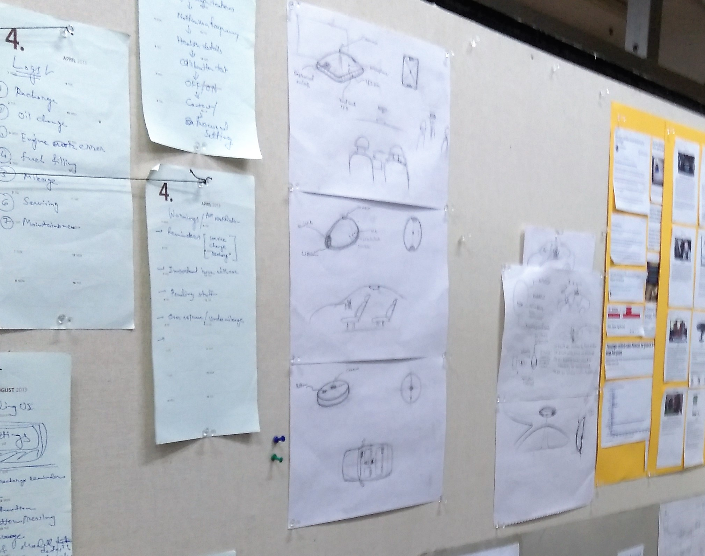
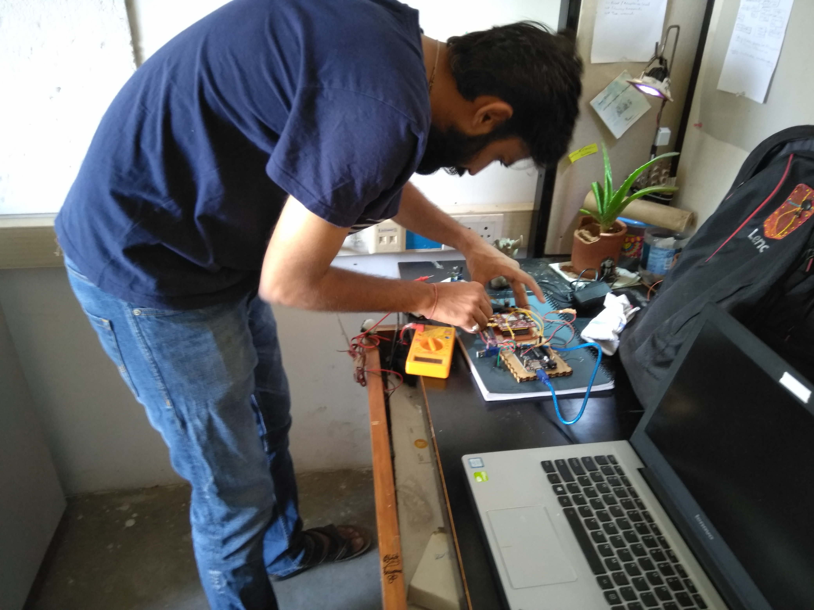
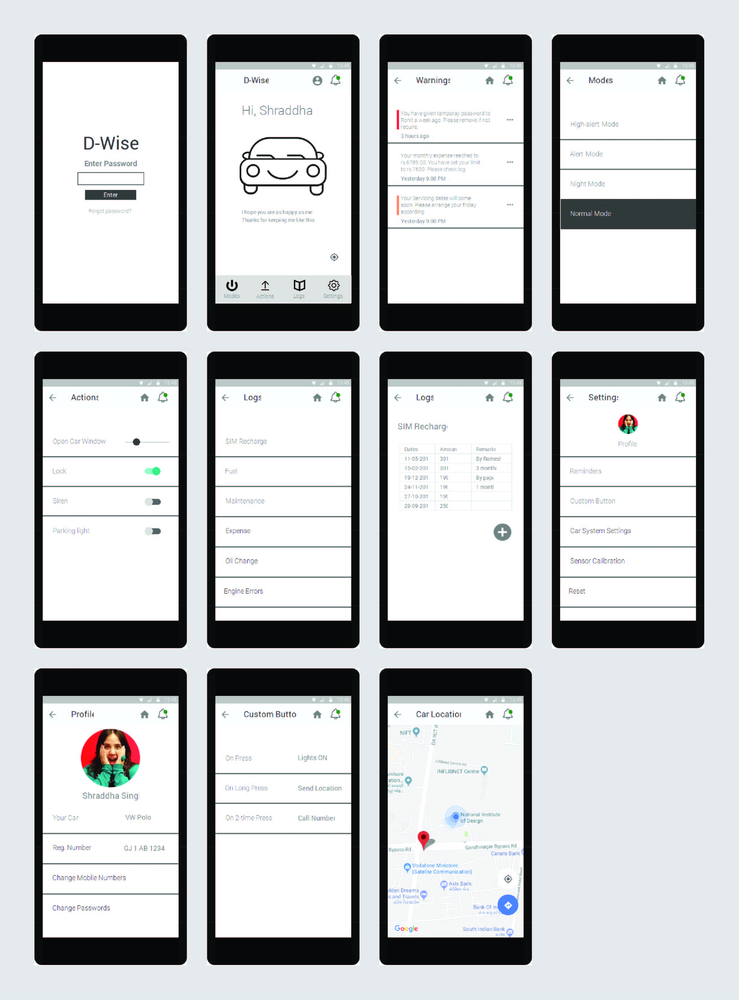

'D-Wise' is an Internet of Things which gives require awareness of things happens inside the car in emergency situations or situations where awareness is required
Car has become the most significant medium of transportation in these years. In last five years, there was an exponential increment in sells of new car. According to numbers, India is now 4th biggest car market in world.
As we know car are being smarter than before. It has auto-lock facility, Air bags and many more. But people avoid these features and buy base model of car because it is chipper. In rural area, Mostly, people buy these vehicle as they face difficulty to adopt technology because it made like that. It is not indigenously developed.
This journey start with a news article about a kid die in a car while playing around it, in Delhi. I started researching about it. I found around 300 kids die in car in last 10 years at USA. It was horrifying news for me. I found few cases in India, from newspapers but most of the cases where undocumented.
It was a hypothesis that if we buy these many cars in India, it may cross this number in few years. I wanted to work on these. I started research around these data. There is multiple use case I found, where car technology is still limited. It is related to person’s life, security of car and enhancement of car technology. Please have a look on small fractioned use cases which are borrowed from my primary research (name and location are changed for personal security reason).
Primary research involves 35 car users (urban, semi-urban), 8 cab drivers, 4 single-mothers.
It was a good amount of data to figure the actual need. There are many things happens when the car owner is not around the car. People sometimes forget baby/pet inside the car, sometimes they have intentionally kept for a while and meanwhile they forget. Sometimes child locks him/herself while playing around. Vandalising of the car. Anything can happen.
There are countless situations where things going around the car and the owner is not aware. This system gives you all updates in situations where the owner is getting information or sometime owner being the victim in situations. Situations are not in our hand but if you are aware of them, you can cover them as soon as possible.
 On basis of functionality and the aesthetics, it was formed minimal and less complicated. It is designed like it can be part of car itself and also marge with atmosphere, so other can't notice it. So, there will be less chance of tempering. If it is tempered, owner will be notify as quick as possible.
It was located on B-pillar or center of the car which is easier for sensors to get the data or driver (user) can easily access the custom/ emergency button which has many functionality on different pressing pattern (in wireframe below).

Prototype has 7 sensors with Arduino. GSM module was the base, becomes medium for all interaction to become IoT. PIR, Sound, Bluetooth, Vibration, Gyroscope, Acceleromete and temprature sensors where detecting and making decision require to inform user.

Wireframe is just made for prototype purpose. It was intentionally black and white and low-level interactions erations (for prototype), to have less distraction on functionality part (to make it more understandable). It can be enhanced with more aesthetics. It got all the functions as per need of all use case requirement. We can discuss functions and interactions in detail (order as per screen).
For security device for the car, the most important thing is the password. In D-wise, 3 passwords are given.
On App opening, you need a password which will protect your app from the unknown user which sometimes gets your phone.
There are multiple actions you can apply via your phone to your car like opening windows, play siren, On headlights, even unlock the car. For that, you need a password. It can also be used to confirm the change in settings.
Sometimes, Family member or friend takes your car to drive. This password will give limited access to them. so your settings can be secure.
The home screen shows the car's condition from your ECU(Electronic Computer Unit, controls all system of the car), So you can stay updated on the maintenance side. It will be interactive which is easier to interpret. Warnings can be at the top. Below that user can be addressed by name, gives a feeling of owning it. Other options are at below. Routinely usable functions are on the screen which increases immediacy of accessing it.
The color-coded warning can make easy to detect the priority of warning. Please read the warning from the image for better understanding of priority.
Modes are really important for security purpose. When you are out of the city or you used to park your car on the road due to less parking space, this modes can help to give you updates according.
Hacker can hack your remote frequency to unlock your car. To prevent that you put your vehicle in alert mode, so when your phone is not in nearby then it will notify you immediately
It can help when you are on vacation or not in town. It can notify your neighbor also when it find unwanted activity around your car. Won't play siren because ultimately it doesn't have any purpose.
As normal as possible.
It alerts all sensors automatically on given time. The mode will switch from Normal to Night and vice-versa on a set time. It can be set manually also.
Actions can be taken remotely from your phone with confirmation through the password. Actions can be an opening window, Unlock the doors, Play siren, On parking light. In different situations when you are not around, still you have access to it. You are on the 12th floor and your cleaner needs to unlock the car. In summer, On temperature rise, you can open window little bit from the sliding bar so, hot air can get out before you reach your car.
Logs are helpful in maintaining car. System runs on GSM which needs recharge. Fuel log can help you to maintain car average and also you can maintain budget spent on car from the monthly set target. You can save a lot of money from brakdowns because whenever you need oil change or some engine error get found which can be immediately repaired.
Settings are helpful to celebrate the sensor, set reminder like to check the tire condition after every 10000km. You can change passwords. Maintain your profile backups, so no worries on getting new data on the new phone. Set the settings of the custom button for immediate interaction.
Car location is easily found when you have parked in a huge parking lot.
Overall, DWise covers all the basic need which user needs for their car. It has good potential to be a B2C product for car as suggested by few car designers.
Cabs can have this device or integrates this system with their app. So, whenever a driver misbehaves, User can activate the system from their sound interaction using special hot words. check the video below.